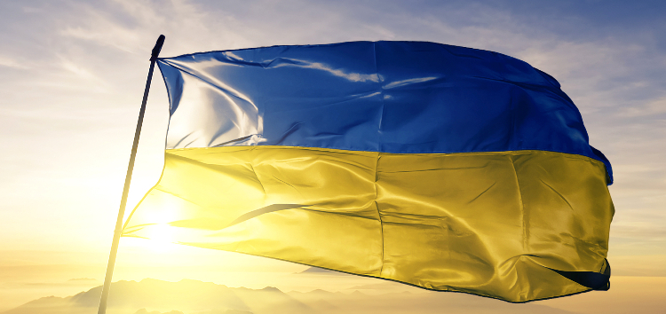
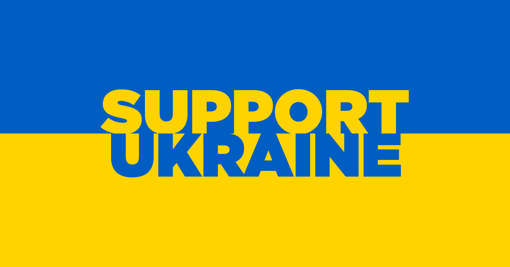

Support Ukraine Subscription
 Country: Ukraine
The Charity Foundation "Come Back Alive" regularly and timely
reports on its activities to all benefactors, state bodies and
Ukrainian society.
By confirming your subscription, you authorize Come Back
Alive Foundation to charge your card for this and future
charges in accordance with their terms. To unsubscribe - use
the appropriate functionality in the e-mail that will be sent
to you.
Country: Ukraine
The Charity Foundation "Come Back Alive" regularly and timely
reports on its activities to all benefactors, state bodies and
Ukrainian society.
By confirming your subscription, you authorize Come Back
Alive Foundation to charge your card for this and future
charges in accordance with their terms. To unsubscribe - use
the appropriate functionality in the e-mail that will be sent
to you.
Country: Ukraine
The Charity Foundation "Come Back Alive" regularly and timely
reports on its activities to all benefactors, state bodies and
Ukrainian society.
By confirming your subscription, you authorize Come Back
Alive Foundation to charge your card for this and future
charges in accordance with their terms. To unsubscribe - use
the appropriate functionality in the e-mail that will be sent
to you.
HUMANITARIAN AND MEDICAL AID TO UKRAINE

Country: Ukraine
Ukrainians in flashpoint areas urgently need humanitarian
aid, but usual supply chains are currently unavailable.
A list of the most urgent needs. We will gratefully accept:
- tourist / dehydrated food
- nuts, protein bars, dry fruit
- fast food (pasta / soups / purees)
- condensed milk
- sweets (bars, etc.)
- baby food (formula or meals) not in glass
- candles
- sleeping bags
- power banks
OFFICIAL FUNDRAISING PLATFORM OF UKRAINE

Country: Ukraine
UNITED 24 PROVIDE FUND DISTRIBUTION REPORTS EVERY WEEK IN
FIVE DIRECTIONS
People from all over the world have united in their will to
help Ukraine. The UNITED24 goal is to increase donations to
Ukraine and ensure the efficiency and transparency of their
distribution.